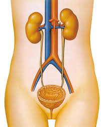
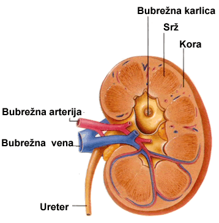

Metaboličkim procesima u našem tijelu proizvode se različite materije i ergija, koji su neophodni za njegovo funkcionisanje. Metaboličkim procesima u ćelijama nastaju štetne ili nepotrebne materije koje iz svih ćelija prelaze u krv. Štetne materije izdvajaju se i uklanjaju iz organizma prečišćavanjem krvi. U tome se i sastoji glavna uloga sistema za izlučivanje. Njega čine: bubrezi, mokraćovodi, mokraćna bešika i mokraćna cijev. Sistem za izlučivanje vrši i regulaciju količine vode i mineralnih soli u tijelu. Manji dio štetnih materija izlučuje se preko kože i organa za varenje.
|  | Organi za izlučivanje |
Bubrezi su smješteni u trbušnoj duplji, ispod dijafragme sa obje strane kičmenog stuba. To su parni organi pasuljastog oblika, dužine oko 12 cm i širine oko 6cm. Bubreg je zaštićen tankom vezivnom opnom i masnim tkivom u kome je smješten. Ispod zaštitne opne nalazi se bubrežno tkivo sastavljeno od bubrežne kore i bubrežne srži. Na presjeku bubrega kora se uočava kao svjetliji dio.
|  | Građa bubrega |
Bubrežno tjelašce i bubrežni kanalić čine osnovnu funkcionalnu jedinicu bubrega-nefron. U jednom bubregu ima oko milion nefrona. Svako bubrežno tjelašce sadrži gust splet kapilara obavijen dvoslojnom membranom u obliku lijevka-Boumanovom čaurom. Boumanova čaura nastavlja se u bubrežni kanalić, koji vijuga kroz bubrežnu koru i ulazi u bubrežni srž. Svaki bubrežni kanalić obavijen je gustom mrežom kapilara.
U bubrežnoj srži, uočavaju se bubrežne piramide. Njihove vrhove obuhvataju bubrežne čašice. Sve bubrežne čašice ulivaju se u centralnu šupljinu bubrega-bubrežnu karlicu.
Kroz zidove kapilara bubrežnog tjelašca vrši se filtracija krvne plazme. Iz krve plazme filtrira se voda sa rastvorenim materijama: soli, šećeri, amonijak, urea, mokraćna kisjelina. Ovaj filtrat krvne plazme naziva se primarna mokraća i sliva se u prostor između dva sloja Baumanove čaure. Tokom jednog dana u našem tijelu nastane oko 180l primarne mokraće. Primarna mokraća nastavlja da teče kroz bubrežne kanaliće.
Dok primarna mokraća prolazi kroz bubrežne kanaliće, šećeri, najveći dio vode i neke soli se reapsorbuju, tj. prelaze u okolne kapilare. Reapsorbcijom se iz primarne mokraće u krv vraćaju materije koje su potrebne organizmu. Zahvaljujući ovom procesu, od 180 litara primarne mokraće, dnevno nastane 1,5-2 litra finalne ili sekundarne mokraće, koja sadrži preostali dio vode sa štetnim materijama. Nastala mokraća sliva se bubrežnim kanalićima u bubrežne piramide, zatim u bubrežne čašice i puni bubrežnu karlicu.
Mokraća, koja se u bubrezima neprekidno proizvodi, otiče iz bubrežne karlice u mokraćovode. To su parni cjevasti organi, dužine oko 30 cm. Oba mokraćovoda se ulivaju u mokraćnu bešiku, u kojoj se skuplja mokraća. Mokraćna bešika je šupalj organ smješten u karličnoj duplji. Zid mokraćne bešike izgrađen je od vezivnog omotača i glatkih mišića. U zidu bešike nalaze se i posebne nervne ćelije, koje reaguju na rastezanje. Kada u bešici ima 250ml-300ml mokraće, zid se rasteže, a nervne ćelije šalju signale o potrebi pražnjena. Zadržavanje mokraće u mokraćnoj bešici reguliše mišić stezač, koji se nalazi na prelazu iz bešike u mokraćnu cijev. Rad ovog mišića je pod uticajem naše volje. Mokraća se kroz mokraćnu cijev izlučuje napolje.